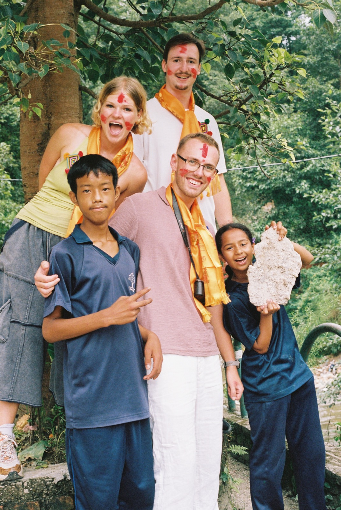
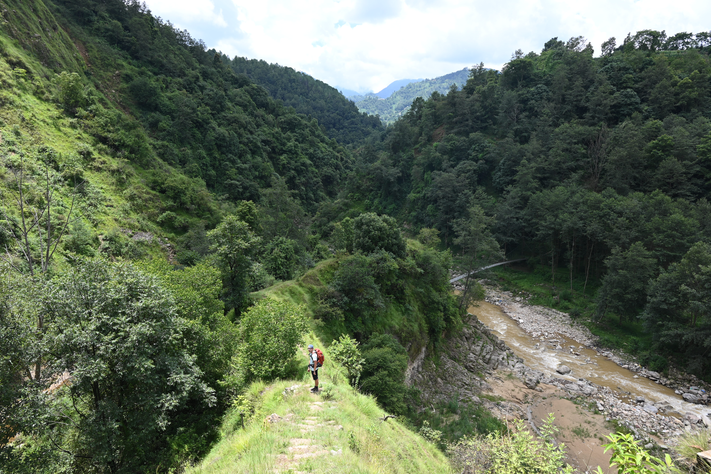
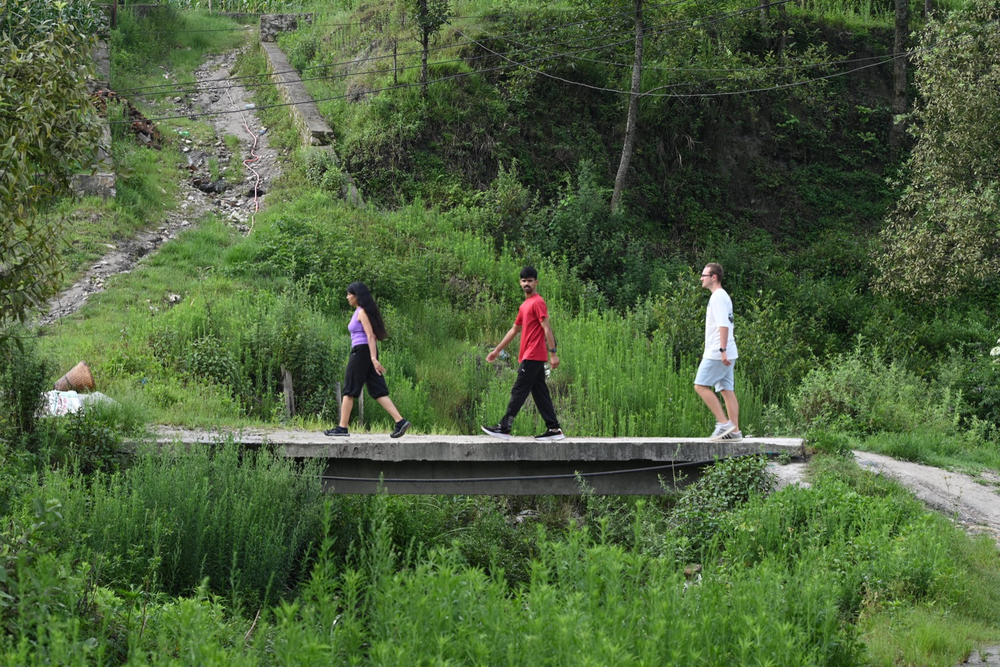

VIE ASSOCIATIVE & SOLIDARITÉ · ENSEEIHT COMMUNITY INITIATIVES & STUDENT LIFE · ENSEEIHT
Engagement Associatif & Citoyen Civic & Community Engagement
Prendre des responsabilités concrètes au service des autres : présidence de TEAMNEPAL, réalisation vidéo avec TVN7 et actions solidaires avec Human7. Taking real-world leadership in service of others: presiding TEAMNEPAL, video production with TVN7, and local solidarity with Human7.
TEAMNEPAL : Co-création Vidéo & Solidarité TEAMNEPAL: Video Co-creation & Solidarity
J'ai co-fondé et présidé l'association étudiante TEAMNEPAL pour monter une mission de 38 jours à Chapali (Népal) auprès de 260 élèves de l'école Victor Hugo Manjushree Vidyapith. I co-founded and lead the student non-profit TEAMNEPAL, directing a 38-day mission in Chapali (Nepal) supporting 260 students at Victor Hugo Manjushree Vidyapith.
Nous avons réuni un budget de 9 300 € grâce au soutien déterminant du FONJEP, de N7DEV (fonds de dotation de l'ENSEEIHT) et des Alumnis de l'école. Sur place, nous avons co-créé des courts-métrages fiction avec les jeunes et co-financé la bibliothèque de l'internat et la réfection du sol du gymnase. We raised a 9,300 € budget backed by FONJEP, N7DEV (school endowment fund), and Alumni. We co-created student fiction films and funded the boarding library and gym floor renovation.
Découvrir le projet Népal en détail → Explore the Nepal project in detail →
TVN7 : Captation, Régie & Réalisation TVN7: Video Production, Live Broadcast & Editing
Membre actif de TVN7, l'association vidéo de l'ENSEEIHT, je participe à la réalisation de projets audiovisuels tout au long de l'année scolaire : Active member of TVN7, ENSEEIHT's filmmaking and broadcast club, I contribute to media projects year-round:
- Technique de prise de vue & son : Prise en main de caméras de reportage, éclairages de plateau, micros HF et enregistreurs Tascam. Camera & Audio craft: Operating professional cameras, studio lighting, wireless mics, and Tascam audio gear.
- Couverture d'événements & régies : Captation multi-caméras et retransmissions en direct pour les grands rendez-vous de la vie étudiante et sportive de l'école. Live broadcasting & events: Multi-camera live coverage for campus life, conferences, and sports events.
- Post-production DaVinci Resolve : Dérushage, montage rythmé et étalonnage des films associatifs et documentaires. Editing & Grading: Video editing, pacing, and color grading on DaVinci Resolve for documentaries and campus shorts.
- Soutien au projet Népal : TVN7 nous a formés et a prêté du matériel professionnel pour animer les ateliers vidéo à Chapali. Support for Nepal: TVN7 trained our team and provided professional gear for the workshops in Chapali.

Vice-Président d'Human7 : Solidarité Locale Human7 Vice-President: Local Solidarity
Human7 est l'association de solidarité historique de l'ENSEEIHT. En tant que Vice-Président, j'aide à coordonner les actions caritatives et citoyennes à l'échelle de Toulouse : Human7 is ENSEEIHT's longstanding charity club. As Vice-President, I help coordinate community drives across Toulouse:
- La Course Rose : Mobilisation étudiante et collecte de fonds pour la prévention et la recherche contre le cancer du sein. La Course Rose: Student mobilization and fundraising for breast cancer prevention and research.
- Actions solidaires du quotidien : Organisation de collectes de don du sang en lien avec l'EFS, maraudes d'aide aux personnes sans-abri et soutien scolaire. Community initiatives: Blood donation drives with the French Blood Agency (EFS), winter food runs for the unhoused, and local tutoring.
- Partage d'expérience : Accompagnement des étudiants de l'école préparant un projet d'engagement solidaire à l'international. Mentoring: Guiding student cohorts preparing international solidarity initiatives.
